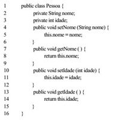
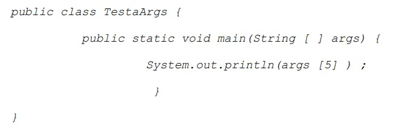
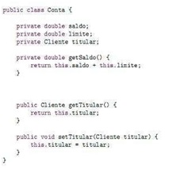

1. Ano: 2012 Banca: IDECAN Órgão: Banestes Prova: Analista de Tecnologia da Informação - Desenvolvimento de Sistemas
Java é uma linguagem orientada a objetos e por padrão, os atributos da classe são confinados, permitindo que o acesso
a eles seja apenas através dos métodos disponibilizados pela classe. Os métodos set, além de sua função principal,
denominam-se métodos
2. Ano: 2017 Banca: CS-UF GÓrgão: UFG Prova: Analista de Tecnologia da Informação - Desenvolvimento de Sistemas
Considere o seguinte trecho de código na linguagem de programação Java.

A utilização dos métodos getters e setters, à maneira dos declarados nas linhas 4, 7, 10 e 13 do código apresentado,
é uma estratégia para aplicar um importante conceito de orientação a objetos chamado
3. Ano: 2015 Banca: INSTITUTO AOCP Órgão: EBSERH Prova: Analista de Tecnologia da Informação - Processos (HE-UFPEL)
Sobre classes em Java, assinale a alternativa correta.
4. Ano: 2012 Banca: CESGRANRIO Órgão: Petrobras Prova: Profissional Júnior - Formação Analista de Sistemas - Ênfase
em Java - Crm e Web
Analise o código de um programa Java a seguir.

Considere a execução do programa com os seguinte parâmetros: “um dois três quatro cinco seis sete”
O que será impresso pelo programa ao executar esse comando?
5. Ano: 2009 Banca: INSTITUTO CIDADES Órgão: UNIFESP Prova: Analista de Tecnologia da Informação
Observe o código, em Java:

Acerca do código acima, analise as seguintes afirmativas:
| LISTA ANTERIOR | PRÓXIMA LISTA |
|---|